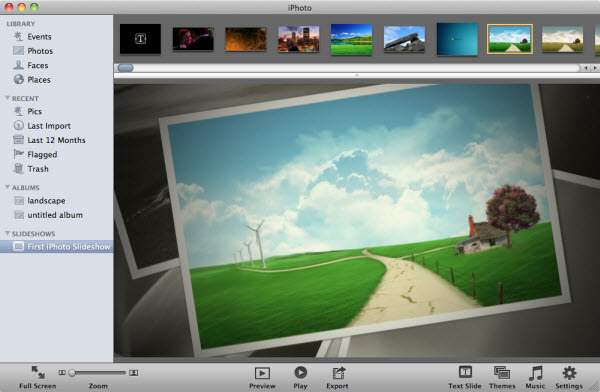

Teaching Point:
Today we will learn how to use the Workscreen in iPhoto.
The iPhoto Workscreen
When you open up iPhoto you see your pictures in front of you, and the choices on the left side. It is important to know what the different choices are, so you know where to click when you want to find your pictures.
The first choices are under the word Library. This is where you see ALL of your pictures. We will use EVENTS - which is where we see the pictures put together in groups. If you ever can't see the pictures you are looking for just click on EVENTS.
To get pictures into iPhoto, drag them from the Desktop into the big windo in the middle. To see ALL of your pictures, just click EVENTS. You can also Zoom in and out of your picture collection by using the little knob on the bottom.
Today's Assignment
Drag your pictures into iPhoto. Practice using the Zoom Knob to see all of your pictures.
Back to School Portal